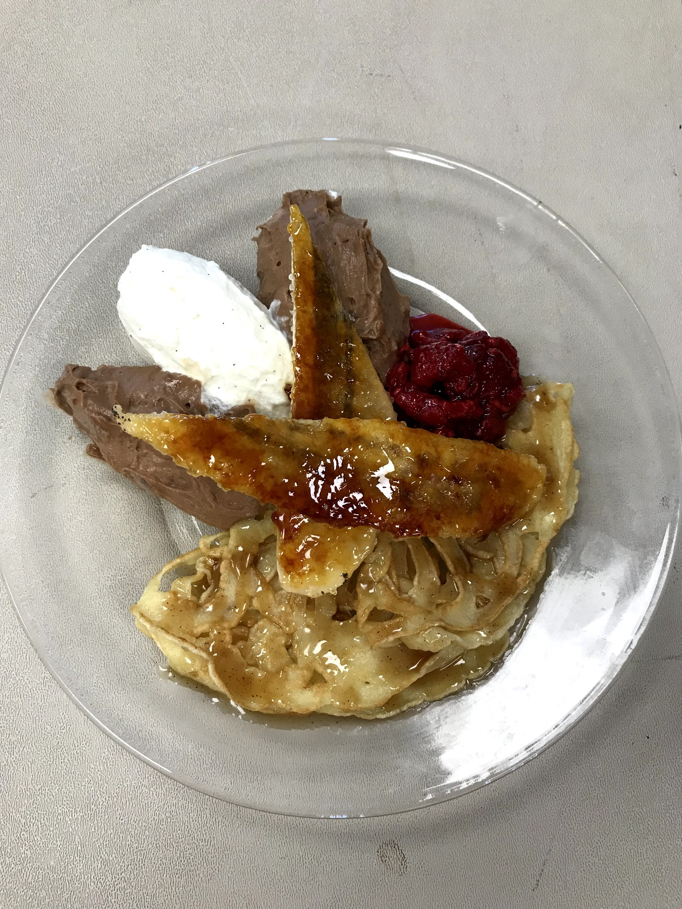
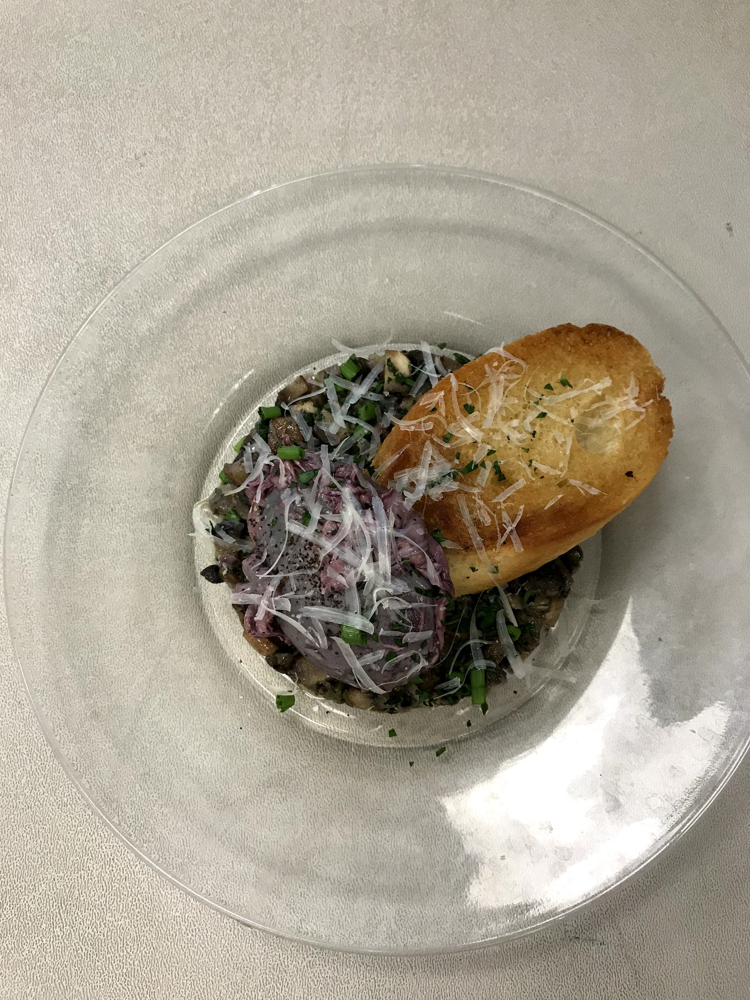
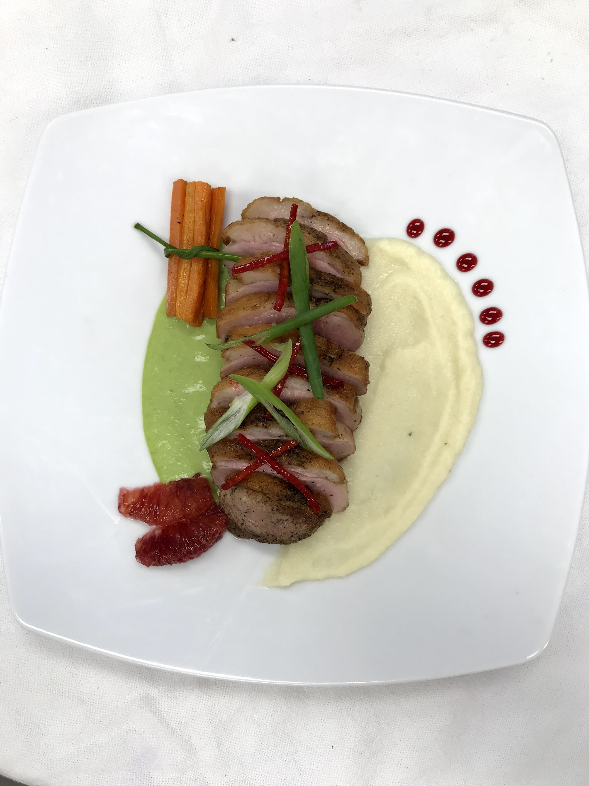

Being a culinary student, I started from the ground up. My Family always talked about how I couldn't boil water. My Culinary instructor was a contestant on Hells Kitchen, Season 16 and placed 3rd over all. In two years she placed me in four culinary competitions. Two local competitions for Skills USA, one state competition for Skills USA, and one state competition for Prostart.
The Picture above is the local competition that I got first place in that advanced me into going to states.
  
In the pictures above are photographs of the Three course meal that was created by four other team members and myself that had one hour and no electricity to create these dishes. Unfortunately, we only placed third in the state but we left it all out on the table and presented it exactly how we wanted.